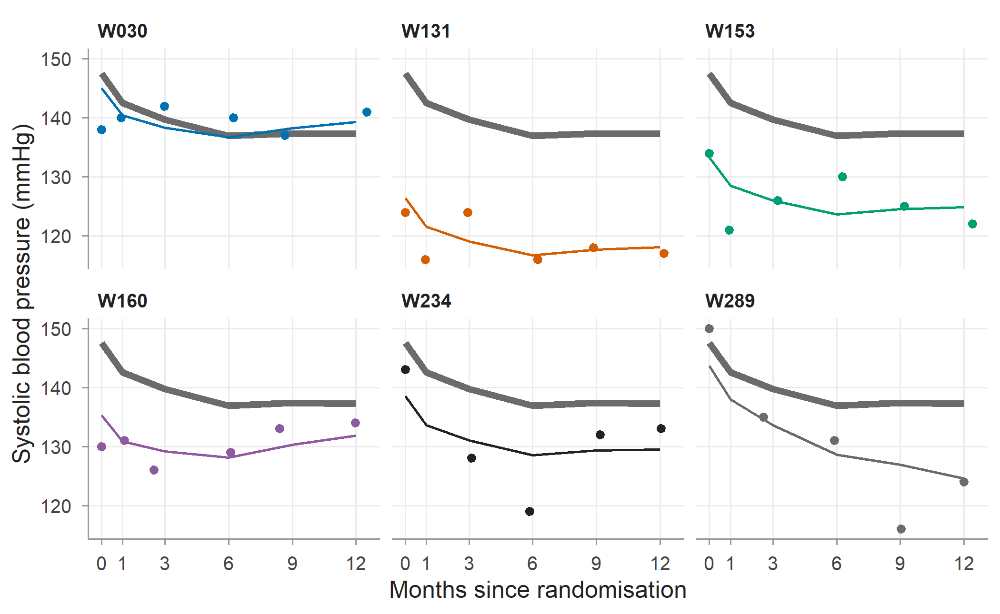
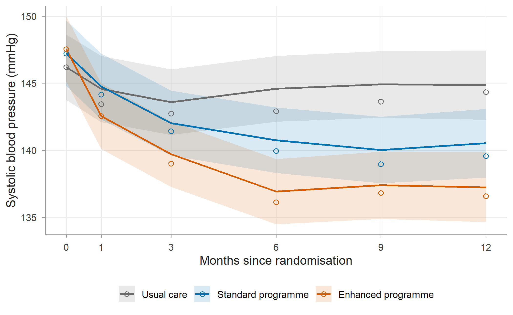
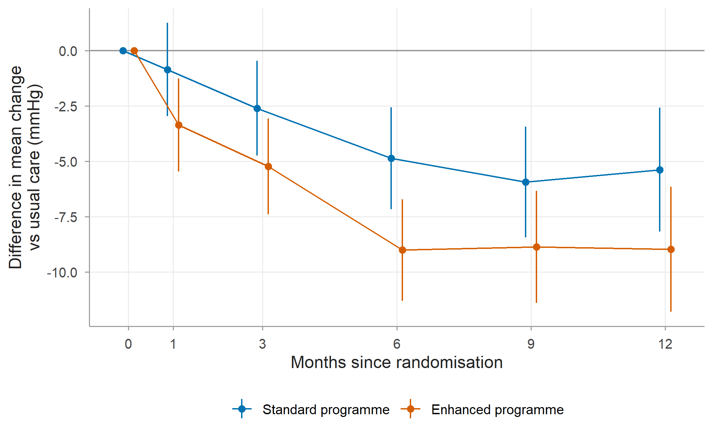
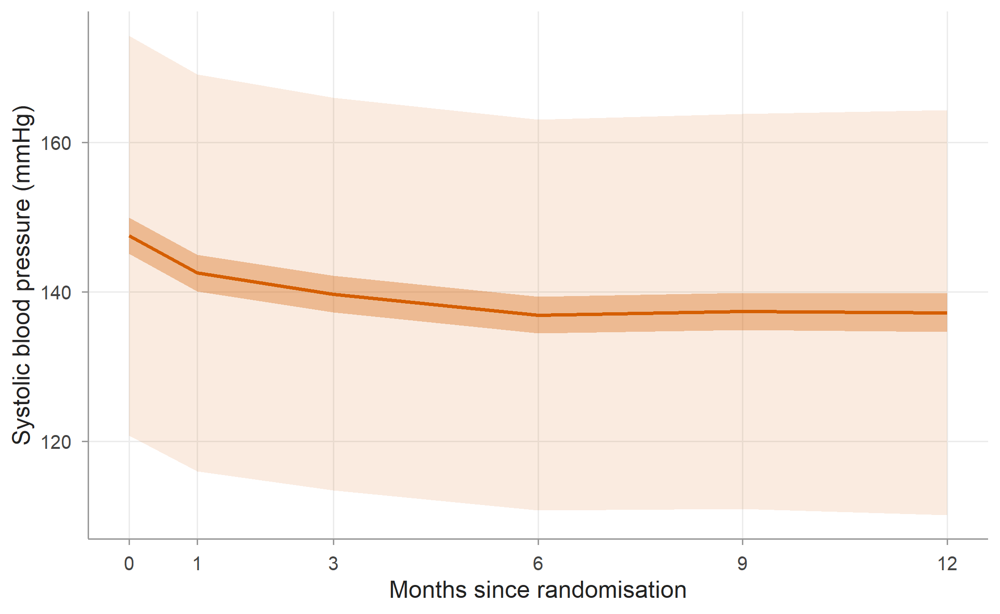

source(here::here("R", "setup.R"))
walk <- load_walk()
truth <- readRDS(here("data", "walk_truth.rds"))
sched <- c(0, 1, 3, 6, 9, 12)6 Interpretation, contrasts and prediction
A fitted longitudinal model is not yet an answer. Its coefficients are tied to a particular coding of time and treatment, many of them answer questions nobody asked, and the quantity the study was designed to estimate is usually a combination of several of them. This module is about turning a fitted model into results: reading coefficients correctly when there are interactions, computing estimated marginal means and the planned contrasts that define the estimand, deciding whether and how to adjust for multiple comparisons, distinguishing predictions for the population average from predictions for individuals, separating confidence intervals from prediction intervals, and presenting all of this in tables and figures that a reader can trust. Throughout, the working example is the primary WALK model and its primary estimand, the difference in mean change in systolic blood pressure from baseline to month 12.
Learning outcomes
By the end of this module participants will be able to:
- 6.1 Interpret main effects correctly in the presence of interactions and centring.
- 6.2 Compute estimated marginal means, planned contrasts and differences in change with
emmeans. - 6.3 Decide how to handle multiplicity for a prespecified set of comparisons.
- 6.4 Produce and distinguish population-average and subject-specific predictions.
- 6.5 Distinguish confidence intervals for mean trajectories from prediction intervals for individual observations.
- 6.6 Present fitted trajectories and their uncertainty in clear, honest figures.
Prerequisites
Module 0 (interactions, confidence and prediction intervals in linear regression), Module 3 (change scores and the problem of many separate tests), Module 4 (linear mixed models, BLUPs) and Module 5 (the marginal covariance \(V_i = Z_iGZ_i^\top + R_i\)).
WarningSimulated data
All examples use simulated data from fictional studies. Results illustrate methods; they are not empirical findings.
The primary model
Every section below uses the course’s primary model: a separate mean for each arm at each scheduled visit (visit_f * arm), with a random intercept and a random slope on actual time (month) for each participant.
m_prim <- lmer(sbp ~ visit_f * arm + (1 + month | id), data = walk,
control = lmer_ctrl)
round(fixef(m_prim), 2)#> (Intercept) visit_f1 visit_f3 visit_f6
#> 146.19 -1.63 -2.60 -1.61
#> visit_f9 visit_f12 armSP armEP
#> -1.28 -1.33 1.04 1.35
#> visit_f1:armSP visit_f3:armSP visit_f6:armSP visit_f9:armSP
#> -0.85 -2.60 -4.87 -5.93
#> visit_f12:armSP visit_f1:armEP visit_f3:armEP visit_f6:armEP
#> -5.38 -3.36 -5.23 -9.01
#> visit_f9:armEP visit_f12:armEP
#> -8.86 -8.97The model has 18 fixed effects, one for each of the 3 × 6 arm-by-visit cells, and four covariance parameters. Module 5 showed that the treatment estimates from this model differ by less than 0.1 mmHg from those of the best-fitting covariance model, so we can concentrate on interpretation.
6.1 Main effects, interactions and centring
6.1.1 The research question and estimand
What does each coefficient in a model with a group-by-time interaction mean, and which (if any) of them is the treatment effect? The estimand of WALK is the difference in mean change from baseline to month 12 between each programme and usual care. The question here is whether and where that number appears among the coefficients.
6.1.2 Data structure and outcome types
Any regression model with an interaction: here a continuous outcome with a factor (arm) interacting with time, coded either as a factor (visit_f) or as a continuous variable (month). The same logic applies to continuous covariates such as age and body mass index (BMI), and to generalized linear models on the link scale.
6.1.3 Intuition
In a model with an interaction \(A \times B\), the coefficient of \(A\) alone is the effect of \(A\) when \(B\) is at its reference value (or zero). It is a “simple effect”, not an average effect. If time is coded so that zero is baseline, the arm coefficients are differences between arms at baseline, which in a randomised trial should be close to zero and are of no interest. Move the zero of time to month 12 (centring) and the same coefficients become differences at month 12. The model, its fit and its predictions do not change; only the question that each coefficient answers changes.
6.1.4 The model
The linear-time model (one of the course’s reference models) is
\[ y_{ij} = \beta_0 + \beta_1 t_{ij} + \beta_2\text{SP}_i + \beta_3\text{EP}_i + \beta_4 t_{ij}\text{SP}_i + \beta_5 t_{ij}\text{EP}_i + b_{0i} + b_{1i}t_{ij} + \varepsilon_{ij}, \]
where \(y_{ij}\) is SBP for participant \(i\) at occasion \(j\), \(t_{ij}\) is actual months since randomisation, \(\text{SP}_i\) and \(\text{EP}_i\) are indicators of the programme arms, \(b_{0i}\) and \(b_{1i}\) are the random intercept and slope, and \(\varepsilon_{ij}\) is the residual. The mean in usual care is \(\beta_0 + \beta_1 t\) and in SP it is \((\beta_0 + \beta_2) + (\beta_1+\beta_4)t\), so the SP–UC difference at time \(t\) is \(\beta_2 + \beta_4 t\). At \(t = 0\) that is \(\beta_2\). Replacing \(t\) by \(t^\ast = t - 12\) gives a model with coefficients \(\beta^\ast_2 = \beta_2 + 12\beta_4\) and \(\beta^\ast_3 = \beta_3 + 12\beta_5\), which are the differences at month 12, while the slopes \(\beta_1, \beta_4, \beta_5\) are unchanged.
In the primary model with categorical time, with \(v\) indexing scheduled visits and UC and baseline as reference levels, the mean in arm \(a\) at visit \(v\) is \(\beta_0 + \gamma_v + \alpha_a + (\gamma\alpha)_{va}\), where \(\gamma_v\) are visit effects, \(\alpha_a\) arm effects and \((\gamma\alpha)_{va}\) interactions. The change from baseline to visit \(v\) in arm \(a\) is \(\gamma_v + (\gamma\alpha)_{va}\), and in usual care it is \(\gamma_v\). So the difference in mean change between arm \(a\) and UC at visit \(v\) is exactly the interaction coefficient \((\gamma\alpha)_{va}\).
6.1.5 Assumptions and limitations
Reading a coefficient as a simple effect assumes that the coding of the reference levels and the origin of continuous variables is what you think it is. Check contrasts() for factors (R’s default is treatment coding) and the definition of every derived variable. The equivalence of difference in change and interaction coefficient holds for the saturated cell-means model; in models with covariate-by-time interactions or with a constrained baseline it no longer holds, and contrasts of estimated means are safer.
6.1.6 Fitting the model in R
walk <- walk |> mutate(month12 = month - 12,
age10 = (age - 60) / 10, bmi_c = bmi - 29)
m_lin <- lmer(sbp ~ month * arm + (1 + month | id), data = walk, control = lmer_ctrl)
m_lin12 <- lmer(sbp ~ month12 * arm + (1 + month12 | id), data = walk, control = lmer_ctrl)
centring <- data.frame(term = names(fixef(m_lin)), time_from_0 = fixef(m_lin),
time_from_12 = fixef(m_lin12), row.names = NULL)
centring#> term time_from_0 time_from_12
#> 1 (Intercept) 145.00959 144.60561
#> 2 month -0.03366 -0.03366
#> 3 armSP 0.30530 -5.57438
#> 4 armEP -0.76422 -9.44648
#> 5 month:armSP -0.48997 -0.48997
#> 6 month:armEP -0.72352 -0.72352c(logLik_month = logLik(m_lin), logLik_month12 = logLik(m_lin12))#> logLik_month logLik_month12
#> -6709 -67096.1.7 Interpreting the output
With time measured from randomisation, armSP is 0.31 and armEP is -0.76 mmHg: estimated differences at baseline, small as randomisation implies. With time measured from month 12, the same terms are -5.57 and -9.45 mmHg, the estimated differences in mean SBP at month 12. You can check the algebra: 0.31 + 12 × (-0.49) = -5.57. The slopes and slope differences (month:armSP = -0.49 mmHg/month) are identical in both parameterisations, and so is the log-likelihood: the two fits are the same model.
Note that the month-12 difference from the linear-time model is a difference in mean SBP at month 12, not a difference in change. In this model the two are related through the baseline difference: the difference in change from 0 to 12 is \(12\beta_4 = -5.88\) mmHg for SP. It is also a poor estimate of the WALK estimand, because the true trajectories are not linear: they fall in the first few months and then level off.
In the primary model, the interaction visit_f12:armSP = -5.38 and visit_f12:armEP = -8.97 are the differences in mean change from baseline to month 12, the primary estimands. The arm “main effects” armSP = 1.04 and armEP = 1.35 are baseline differences, and the visit “main effects” (visit_f12 = -1.33) are changes within usual care only.
Centring covariates. The same principle applies to baseline covariates. The covariate-adjusted model adds age, sex and BMI, centred so that the intercept refers to a 60-year-old man with BMI 29:
m_adj <- lmer(sbp ~ visit_f * arm + age10 + sex + bmi_c + (1 + month | id),
data = walk, control = lmer_ctrl)
m_adj_raw <- lmer(sbp ~ visit_f * arm + age + sex + bmi + (1 + month | id),
data = walk, control = lmer_ctrl)
rbind(centred = fixef(m_adj)[c("(Intercept)", "visit_f12:armSP", "visit_f12:armEP")],
raw = fixef(m_adj_raw)[c("(Intercept)", "visit_f12:armSP", "visit_f12:armEP")])#> (Intercept) visit_f12:armSP visit_f12:armEP
#> centred 148.8 -5.37 -9.023
#> raw 122.2 -5.37 -9.023With raw age and BMI the intercept is the expected baseline SBP of a usual-care man aged 0 with a BMI of 0, a meaningless extrapolation (122.2 mmHg). With centred covariates it is 148.8 mmHg, a sensible value. The treatment terms are identical, because the covariates do not interact with arm or time. Centring matters for interpretation whenever a variable is part of an interaction or when you want to read the intercept.
6.1.8 Checking the model
Two checks prevent most errors. First, write out the mean for two or three cells by hand from the coefficients and compare with predict(m, re.form = NA) for a row in that cell. Second, refit with a different reference level or origin and confirm that the log-likelihood and fitted values are unchanged while the coefficients shift as the algebra predicts.
6.1.9 Reporting
TipReporting example
Time was included as a categorical variable (scheduled visit) interacting with arm, so that each arm had its own mean at each visit. In this parameterisation the visit-by-arm interaction terms at month 12 equal the differences in mean change from baseline to month 12: -5.4 mmHg for the standard programme and -9.0 mmHg for the enhanced programme, relative to usual care. Age and BMI were centred at 60 years and 29 kg/m².
6.1.10 Common mistakes
ImportantCommon mistakes
- Reporting
armSPfrom an interaction model as “the treatment effect”. It is the difference at the reference time (usually baseline). - Reporting
visit_f12as “the change over time”. With an interaction it is the change in the reference arm only. - Centring time without changing the random slope term. Use the same centred variable in fixed and random parts (
(1 + month12 | id)), otherwise the random intercept refers to a different time from the fixed intercept. - Interpreting the intercept with uncentred covariates. It refers to covariate values of zero.
6.2 Estimated marginal means
6.2.1 The research question and estimand
What is the model-estimated mean SBP in each arm at each scheduled visit? These are the building blocks of every contrast that follows. An estimated marginal mean (EMM) is a model prediction for a cell of a reference grid (here each arm-by-visit combination), averaged over any other covariates in a stated way.
6.2.2 Data structure and outcome types
Any model supported by emmeans (Lenth and Piaskowski 2026), including lmer, lme, gls, glmer and geeglm fits. For linear mixed models the EMMs are population-average (marginal) means, because the random effects have mean zero and the identity link means that the mean of the subject-specific means is the mean evaluated at \(b_i = 0\).
6.2.3 Intuition
Think of a table with one cell per arm and visit. The model gives a predicted mean for every cell, using all of the data, including participants who missed some visits. Unlike the raw mean of the observed values in a cell, the EMM accounts for who is missing: under missing at random (MAR) the model uses each participant’s earlier measurements to inform the estimate for the visits they missed (Module 10).
6.2.4 The model
For a reference-grid cell with fixed-effects row vector \(\mathbf{x}^\top\), the EMM and its standard error are
\[ \hat\mu = \mathbf{x}^\top\hat{\boldsymbol\beta}, \qquad \operatorname{SE}(\hat\mu) = \sqrt{\mathbf{x}^\top \widehat{\operatorname{Var}}(\hat{\boldsymbol\beta})\,\mathbf{x}}, \]
where \(\hat{\boldsymbol\beta}\) are the estimated fixed effects and \(\widehat{\operatorname{Var}}(\hat{\boldsymbol\beta}) = (\sum_i X_i^\top \hat V_i^{-1} X_i)^{-1}\) their estimated covariance matrix. When the model contains other covariates, \(\mathbf{x}\) sets them to reference values: numeric covariates at their means, and factor covariates averaged with equal weights by default (weights = "equal") or in proportion to their frequencies (weights = "proportional").
6.2.5 Assumptions and limitations
EMMs inherit every assumption of the model: correct mean model, adequate covariance model, MAR missingness. Confidence intervals use a t distribution with approximate degrees of freedom; with lmer fits the course sets Satterthwaite degrees of freedom (emm_options(lmer.df = "satterthwaite") in setup.R). With about 360 participants the choice hardly matters; with 20 it can. EMMs for models with covariates are means at particular covariate values, not averages over the sample, unless you ask for proportional weights.
6.2.6 Fitting the model in R
emm <- emmeans(m_prim, ~ visit_f * arm)
emm#> visit_f arm emmean SE df lower.CL upper.CL
#> 0 UC 146 1.24 430 144 149
#> 1 UC 145 1.25 473 142 147
#> 3 UC 144 1.24 496 141 146
#> 6 UC 145 1.24 499 142 147
#> 9 UC 145 1.27 457 142 147
#> 12 UC 145 1.31 396 142 147
#> 0 SP 147 1.24 430 145 150
#> 1 SP 145 1.25 472 142 147
#> 3 SP 142 1.23 486 140 144
#> 6 SP 141 1.24 494 138 143
#> 9 SP 140 1.26 450 138 142
#> 12 SP 141 1.30 385 138 143
#> 0 EP 148 1.24 430 145 150
#> 1 EP 143 1.25 465 140 145
#> 3 EP 140 1.24 502 137 142
#> 6 EP 137 1.24 491 134 139
#> 9 EP 137 1.27 462 135 140
#> 12 EP 137 1.32 401 135 140
#>
#> Degrees-of-freedom method: satterthwaite
#> Confidence level used: 0.956.2.7 Interpreting the output
| Output column | What it means | Example (EP, month 12) |
|---|---|---|
emmean |
Estimated mean SBP in the cell | 137.2 mmHg |
SE |
Standard error of that mean | 1.32 |
df |
Satterthwaite degrees of freedom | 401 |
lower.CL, upper.CL |
95% confidence interval for the mean | 134.7 to 139.8 |
The EMMs at baseline are similar across arms (146.2, 147.2 and 147.5 mmHg). By month 12 they have separated: 144.9 in usual care, 140.5 in SP and 137.2 in EP. The standard errors of individual means (about 1.3 mmHg) are much larger than the standard errors of the within-arm changes computed below, because between-person variation in SBP level (SD around 12 mmHg) enters each mean but cancels in a within-person change.
Compare the EMMs with the raw observed means of attended visits:
obs_means <- walk |> group_by(arm, visit_f) |> summarise(observed = mean(sbp), n = n())
cmp_obs <- emm_tab |> select(arm, visit_f, emmean) |>
left_join(obs_means, by = c("arm", "visit_f")) |>
mutate(difference = observed - emmean)
filter(cmp_obs, visit_f %in% c("0", "6", "12"))#> arm visit_f emmean observed n difference
#> 1 UC 0 146.2 146.2 120 -0.006855
#> 2 UC 6 144.6 142.9 101 -1.661322
#> 3 UC 12 144.9 144.3 95 -0.527070
#> 4 SP 0 147.2 147.2 120 -0.023395
#> 5 SP 6 140.8 140.0 103 -0.804257
#> 6 SP 12 140.5 139.6 100 -0.968632
#> 7 EP 0 147.5 147.5 120 -0.003401
#> 8 EP 6 136.9 136.1 105 -0.788572
#> 9 EP 12 137.2 136.6 93 -0.660838At baseline, where everyone is measured, the two agree exactly. At month 12 the observed means are lower than the EMMs in every arm (by 0.5 mmHg in usual care, for example). In WALK, participants with high blood pressure were more likely to drop out, so those still attending at month 12 are a selected, lower-pressure group. The model uses the earlier measurements of the dropouts to correct for this. This is exactly the point of Module 2’s warning that observed means at each visit are not model-estimated mean trajectories when dropout depends on the outcome.
6.2.8 Checking the model
Check that the reference grid is what you intended (ref_grid(m) prints it), especially when the model includes covariates or when some cells have no data. Compare EMMs with observed means at baseline, where they should agree closely, and think about whether discrepancies at later visits have a plausible explanation such as outcome-dependent dropout.
6.2.9 Reporting
TipReporting example
Estimated mean SBP at month 12 was 144.9 (142.3 to 147.4) mmHg in usual care, 140.5 (138.0 to 143.1) mmHg in the standard programme and 137.2 (134.7 to 139.8) mmHg in the enhanced programme (estimated marginal means with 95% confidence intervals from the mixed model, Satterthwaite degrees of freedom).
6.2.10 Common mistakes
ImportantCommon mistakes
- Reporting raw observed means as if they were model estimates. Under outcome-dependent dropout they differ.
- Ignoring the averaging over covariates. With
sexin the model,emmeansaverages men and women equally unless told otherwise. - Using
emmeans(m, ~ arm)in an interaction model. This averages over visits, a quantity nobody asked for;emmeanswarns about it. - Comparing confidence intervals of two EMMs to judge their difference. Overlap of separate intervals is not a test; compute the contrast.
6.3 Planned contrasts: the difference in mean change
6.3.1 The research question and estimand
The primary estimand is the difference in mean change in SBP from baseline to month 12 between each programme and usual care:
\[ \Delta_{a} = \left(\mu_{a,12} - \mu_{a,0}\right) - \left(\mu_{\text{UC},12} - \mu_{\text{UC},0}\right), \qquad a \in \{\text{SP}, \text{EP}\}, \]
where \(\mu_{a,v}\) is the population mean SBP in arm \(a\) at month \(v\). A secondary contrast compares the two programmes, \(\Delta_{\text{EP}} - \Delta_{\text{SP}}\).
6.3.2 Data structure and outcome types
A fitted model and its EMMs. Contrasts are linear combinations of EMMs, so they work for any model with a linear predictor; for GLMMs they are computed on the link scale and can be back-transformed (Module 8).
6.3.3 Intuition
Each contrast is a weighted sum of cell means, with weights that sum to zero. For the SP–UC difference in change, the weights are +1 for SP at month 12, −1 for SP at baseline, −1 for UC at month 12 and +1 for UC at baseline, and 0 for every other cell. Writing the weights explicitly removes any doubt about what is being estimated.
6.3.4 The model
A contrast is \(\theta = \mathbf{c}^\top\boldsymbol\mu\), where \(\boldsymbol\mu\) is the vector of 18 cell means and \(\mathbf{c}\) a vector of weights. Its estimate and standard error are
\[ \hat\theta = \mathbf{c}^\top\hat{\boldsymbol\mu} = \mathbf{c}^\top L\hat{\boldsymbol\beta}, \qquad \operatorname{SE}(\hat\theta) = \sqrt{\mathbf{c}^\top L\,\widehat{\operatorname{Var}}(\hat{\boldsymbol\beta})\,L^\top\mathbf{c}}, \]
where \(L\) is the matrix whose rows are the reference-grid vectors \(\mathbf{x}^\top\) of the 18 cells. The standard error uses the full covariance matrix of the cell means, including their correlation: the month-12 and baseline means of the same arm are positively correlated because they come from the same participants, which is why a within-arm change is estimated much more precisely than either mean.
6.3.5 Assumptions and limitations
As for the EMMs. The interpretation as an effect of the programme relies on randomisation and on the MAR assumption for missing visits. A difference in mean change is a population-average quantity: it is not the change any individual participant would experience.
6.3.6 Fitting the model in R
The reference grid orders cells with visit varying fastest within arm, so we build the weight vectors from a matching grid:
cells <- expand.grid(visit_f = levels(walk$visit_f), arm = levels(walk$arm))
cell_w <- function(a, v) as.numeric(cells$arm == a & cells$visit_f == v)
chg <- function(a, v = "12") cell_w(a, v) - cell_w(a, "0") # change from baseline
L <- list("SP - UC" = chg("SP") - chg("UC"),
"EP - UC" = chg("EP") - chg("UC"),
"EP - SP" = chg("EP") - chg("SP"))
cbind(cells, `SP - UC` = L[["SP - UC"]])#> visit_f arm SP - UC
#> 1 0 UC 1
#> 2 1 UC 0
#> 3 3 UC 0
#> 4 6 UC 0
#> 5 9 UC 0
#> 6 12 UC -1
#> 7 0 SP -1
#> 8 1 SP 0
#> 9 3 SP 0
#> 10 6 SP 0
#> 11 9 SP 0
#> 12 12 SP 1
#> 13 0 EP 0
#> 14 1 EP 0
#> 15 3 EP 0
#> 16 6 EP 0
#> 17 9 EP 0
#> 18 12 EP 0change_within <- contrast(emm, list(UC = chg("UC"), SP = chg("SP"), EP = chg("EP")))
summary(change_within, infer = TRUE)#> contrast estimate SE df lower.CL upper.CL t.ratio p.value
#> UC -1.33 1.010 490 -3.32 0.665 -1.309 0.1912
#> SP -6.70 0.997 476 -8.66 -4.744 -6.724 <0.0001
#> EP -10.29 1.020 492 -12.30 -8.294 -10.109 <0.0001
#>
#> Degrees-of-freedom method: satterthwaite
#> Confidence level used: 0.95dic <- summary(contrast(emm, L), infer = TRUE)
dic#> contrast estimate SE df lower.CL upper.CL t.ratio p.value
#> SP - UC -5.38 1.42 483 -8.17 -2.584 -3.782 0.0002
#> EP - UC -8.97 1.44 491 -11.79 -6.146 -6.243 <0.0001
#> EP - SP -3.59 1.43 484 -6.39 -0.792 -2.521 0.0120
#>
#> Degrees-of-freedom method: satterthwaite
#> Confidence level used: 0.95The same estimates come out of the interaction-contrast approach, which crosses “each visit minus baseline” with “each arm minus usual care”. It returns the whole profile of differences in change at every visit in one call:
ic <- contrast(emm, interaction = c(visit_f = "trt.vs.ctrl1", arm = "trt.vs.ctrl1"))
summary(ic, infer = TRUE)#> visit_f_trt.vs.ctrl1 arm_trt.vs.ctrl1 estimate SE df lower.CL upper.CL
#> 1 - 0 SP - UC -0.852 1.07 1247 -2.96 1.257
#> 3 - 0 SP - UC -2.603 1.09 1396 -4.74 -0.465
#> 6 - 0 SP - UC -4.868 1.17 1483 -7.17 -2.569
#> 9 - 0 SP - UC -5.933 1.28 913 -8.44 -3.429
#> 12 - 0 SP - UC -5.377 1.42 483 -8.17 -2.584
#> 1 - 0 EP - UC -3.363 1.07 1244 -5.46 -1.264
#> 3 - 0 EP - UC -5.225 1.10 1392 -7.39 -3.064
#> 6 - 0 EP - UC -9.007 1.17 1481 -11.30 -6.711
#> 9 - 0 EP - UC -8.859 1.29 909 -11.39 -6.326
#> 12 - 0 EP - UC -8.969 1.44 491 -11.79 -6.146
#> t.ratio p.value
#> -0.792 0.4282
#> -2.388 0.0171
#> -4.153 <0.0001
#> -4.650 <0.0001
#> -3.782 0.0002
#> -3.144 0.0017
#> -4.743 <0.0001
#> -7.696 <0.0001
#> -6.863 <0.0001
#> -6.243 <0.0001
#>
#> Degrees-of-freedom method: satterthwaite
#> Confidence level used: 0.956.3.7 Interpreting the output
Within each arm, SBP fell from baseline to month 12 by 1.3 mmHg in usual care (95% CI -3.3 to 0.7), 6.7 mmHg in SP and 10.3 mmHg in EP. The differences in mean change relative to usual care are:
| Contrast | Estimate (95% CI), mmHg | p | True value (simulated data only) |
|---|---|---|---|
| SP − UC | -5.4 (-8.2 to -2.6) | p < 0.001 | -4.6 |
| EP − UC | -9.0 (-11.8 to -6.1) | p < 0.001 | -8.1 |
| EP − SP | -3.6 (-6.4 to -0.8) | p = 0.012 | -3.5 |
Both programmes reduced SBP more than usual care, and the enhanced programme more than the standard one. The confidence intervals are wide relative to the estimates: the data are compatible with an SP effect anywhere from about 2.6 to 8.2 mmHg greater reduction than usual care. Because the data are simulated we can compare with the truth; the estimates are somewhat larger in magnitude than the true values but the intervals contain them, as they should in about 95% of trials.
The month-12 rows of the interaction-contrast output reproduce the custom contrasts exactly. The other rows show how the difference develops: EP separates from usual care by month 1, SP more slowly, and both differences are largely established by month 6.
6.3.8 Checking the model
Check every custom vector: its weights should sum to zero, and printing it next to the grid (as above) should show +1 and −1 in exactly the cells you intend. Cross-check a contrast against the corresponding interaction coefficient, which in this parameterisation must agree (-8.969 for EP − UC). The standard error of a within-person change should be smaller than that of either mean; if it is not, the covariance model may be ignoring the within-person correlation.
6.3.9 Reporting
TipReporting example
From baseline to month 12, mean SBP fell by 1.3 mmHg in usual care, 6.7 mmHg in the standard programme and 10.3 mmHg in the enhanced programme. The difference in mean change compared with usual care was -5.4 (-8.2 to -2.6) mmHg for the standard programme (p < 0.001) and -9.0 (-11.8 to -6.1) mmHg for the enhanced programme (p < 0.001).
6.3.10 Common mistakes
ImportantCommon mistakes
- Building coefficient vectors in the wrong cell order. Always construct them from the same grid that
emmeansuses and print them alongside. - Comparing month-12 means instead of changes. In a randomised trial the two estimate the same quantity, but they are different contrasts with different standard errors; state which one is the estimand.
- Testing within-arm changes and concluding about between-arm differences. “Significant change in EP but not in UC” is not a test of EP versus UC.
- Forgetting the default adjustment.
contrast(emm, "trt.vs.ctrl")applies a Dunnett-type adjustment by default; setadjustexplicitly so you know what you report.
6.4 Multiplicity and prespecified comparisons
6.4.1 The research question and estimand
WALK has two programmes, six visits and many possible comparisons. If each is tested at the 5% level, the chance of at least one false-positive result across the family grows with the number of tests. The question is which comparisons form a family that needs protection, and how to protect it without discarding the precision the trial was designed for.
6.4.2 Data structure and outcome types
Any set of hypothesis tests. Here the primary family is the two comparisons of a programme with usual care at month 12.
6.4.3 Intuition
The familywise error rate (FWER) is the probability of rejecting at least one true null hypothesis in a family. Adjustment methods control it at, say, 5%. They make sense when a claim of success would be made if any of the family were significant. With two programmes and the claim “a walking programme lowers blood pressure”, a false positive for either would be a false claim, so the two comparisons with usual care form a family. By contrast, the comparison of the two programmes, and the differences at months 1 to 9, are secondary or descriptive. They answer different questions, are reported with estimates and intervals, and are not used to declare the trial a success.
There is more than one way to control the FWER:
- Bonferroni tests each of \(m\) hypotheses at \(\alpha/m\). Simple and conservative.
- Holm orders the p-values and tests the smallest at \(\alpha/m\), the next at \(\alpha/(m-1)\), and so on, stopping at the first non-rejection. It always rejects at least as much as Bonferroni.
- Dunnett uses the joint (multivariate t) distribution of comparisons that share a control group. The comparisons SP–UC and EP–UC are positively correlated because they share the UC estimate, so a joint adjustment is less severe than Bonferroni. In
emmeansthis isadjust = "mvt"(exact) or"dunnettx"(a fast approximation). - A fixed-sequence (hierarchical) procedure tests hypotheses in a prespecified order, each at the full \(\alpha\), and stops at the first non-rejection. It costs nothing if the order is right and loses everything after the first failure if it is wrong.
6.4.4 The model
For a family of \(m\) hypotheses with ordered p-values \(p_{(1)} \le \dots \le p_{(m)}\), Holm’s adjusted p-values are
\[ \tilde p_{(k)} = \max_{l \le k}\ \min\{1,\ (m - l + 1)\,p_{(l)}\}. \]
Dunnett’s adjusted p-value for comparison \(k\) is \(P(\max_l |T_l| \ge |t_k|)\), computed from the joint distribution of the test statistics \(T_l\), which have the correlation implied by the contrasts’ covariance matrix.
6.4.5 Assumptions and limitations
All adjustments assume the family was defined before seeing the data. Dunnett’s method relies on the multivariate normal (t) approximation of the estimates. Adjustment reduces power; for confidence intervals it widens them. None of these methods protects against an undefined family: if you look at 30 comparisons and adjust for the 2 that came out best, the protection is illusory.
6.4.6 Fitting the model in R
primary <- L[c("SP - UC", "EP - UC")]
summary(contrast(emm, primary, adjust = "none"), infer = TRUE)#> contrast estimate SE df lower.CL upper.CL t.ratio p.value
#> SP - UC -5.38 1.42 483 -8.17 -2.58 -3.782 0.0002
#> EP - UC -8.97 1.44 491 -11.79 -6.15 -6.243 <0.0001
#>
#> Degrees-of-freedom method: satterthwaite
#> Confidence level used: 0.95summary(contrast(emm, primary, adjust = "holm"), infer = TRUE)#> contrast estimate SE df lower.CL upper.CL t.ratio p.value
#> SP - UC -5.38 1.42 483 -8.57 -2.18 -3.782 0.0002
#> EP - UC -8.97 1.44 491 -12.20 -5.74 -6.243 <0.0001
#>
#> Degrees-of-freedom method: satterthwaite
#> Confidence level used: 0.95
#> Conf-level adjustment: bonferroni method for 2 estimates
#> P value adjustment: holm method for 2 testssummary(contrast(emm, primary, adjust = "mvt"), infer = TRUE)#> contrast estimate SE df lower.CL upper.CL t.ratio p.value
#> SP - UC -5.38 1.42 483 -8.53 -2.22 -3.782 0.0003
#> EP - UC -8.97 1.44 491 -12.16 -5.78 -6.243 <0.0001
#>
#> Degrees-of-freedom method: satterthwaite
#> Confidence level used: 0.95
#> Conf-level adjustment: mvt method for 2 estimates
#> P value adjustment: mvt method for 2 testsA fixed-sequence procedure needs no software: test EP versus UC first (the comparison expected to be largest), then, only if it is significant, SP versus UC, then EP versus SP, each at the 5% level.
6.4.7 Interpreting the output
The estimates are identical under every method; only p-values and interval widths change. For SP versus UC the unadjusted p-value is 0.00017, the Holm-adjusted value 0.00017 and the Dunnett-adjusted value 0.00035. Holm leaves the SP p-value unchanged: the smaller p-value (EP) is compared with \(\alpha/2\) and, once it is rejected, SP is compared with the full \(\alpha\). Holm has no matching simultaneous confidence interval, so emmeans reports Bonferroni intervals instead (its output says so), running from -8.57 to -2.18 mmHg for SP compared with -8.17 to -2.58 unadjusted; the Dunnett intervals (-8.53 to -2.22) are slightly narrower than Bonferroni because they use the correlation between the two comparisons. In WALK the conclusions do not depend on the method: both primary comparisons remain clearly significant. Under the fixed sequence, EP versus UC (p < 0.001) is tested first, then SP versus UC (p < 0.001), then EP versus SP (p = 0.012); all three are rejected at the 5% level, so the hierarchy also allows a confirmatory claim that EP is better than SP.
When not to adjust. Adjustment is for a family of confirmatory claims. It is not needed (and is often harmful) for: a single prespecified primary comparison; secondary and exploratory comparisons that are reported as estimates with confidence intervals and clearly labelled as such; the differences at intermediate visits, which describe the shape of the effect rather than test a new claim; and checks of the model. What matters most is prespecification and transparency: state the primary family and the adjustment method in the analysis plan, report every comparison you made, and do not let secondary findings carry confirmatory weight. Defining the estimands and their analysis before the data are seen is also central to the ICH E9(R1) addendum (International Council for Harmonisation of Technical Requirements for Pharmaceuticals for Human Use (ICH) 2019).
6.4.8 Checking the model
Check that the adjustment in the output is the one you intended. emmeans prints the adjustment method below every table, and its defaults differ between contrast types ("trt.vs.ctrl" defaults to "dunnettx", "pairwise" to "tukey", custom lists to "none").
6.4.9 Reporting
TipReporting example
The two comparisons of each programme with usual care at month 12 formed the primary family, with Dunnett adjustment for multiplicity as specified in the analysis plan. Both comparisons were significant (adjusted p < 0.001 for the standard programme and p < 0.001 for the enhanced programme). The comparison of the two programmes and the differences at earlier visits were secondary and are reported with unadjusted 95% confidence intervals.
6.4.10 Common mistakes
ImportantCommon mistakes
- Adjusting for every comparison in the paper. This destroys power for the questions that matter without protecting anything meaningful.
- Adjusting for nothing while making many confirmatory claims. A claim of success based on the best of many tests is not protected.
- Choosing the adjustment after seeing the results. Prespecify.
- Reporting adjusted p-values with unadjusted intervals (or the reverse) without saying so.
6.5 Population-average and subject-specific predictions
6.5.1 The research question and estimand
Two different questions can be asked of a mixed model. What is the expected SBP at month 12 for the population of participants in the enhanced programme? And what SBP do we expect at month 12 for participant W001, given the measurements already taken on them? The first is a population-average (marginal) prediction, the second a subject-specific (conditional) prediction.
6.5.2 Data structure and outcome types
A fitted mixed model. Subject-specific predictions need the participant’s identifier and data (their BLUPs); population-average predictions need only covariate values.
6.5.3 Intuition
A population-average prediction sets the random effects to their mean, zero: \(\hat y = \mathbf{x}^\top\hat{\boldsymbol\beta}\). A subject-specific prediction adds the participant’s predicted random effects (BLUPs, Module 4): \(\hat y = \mathbf{x}^\top\hat{\boldsymbol\beta} + \mathbf{z}^\top\hat{\mathbf{b}}_i\). With the identity link of a linear mixed model, averaging subject-specific predictions over the distribution of the random effects gives back the population-average prediction exactly, because \(E(\mathbf{x}^\top\boldsymbol\beta + \mathbf{z}^\top\mathbf{b}_i) = \mathbf{x}^\top\boldsymbol\beta\). This is why the fixed effects of a linear mixed model have both a population-average and a subject-specific interpretation. With a nonlinear link (logistic, log) the equality fails, and Modules 7 and 8 show the consequences.
6.5.4 The model
\[ \text{population-average: } E(y_{ij}) = \mathbf{x}_{ij}^\top\boldsymbol\beta, \qquad \text{subject-specific: } E(y_{ij}\mid\mathbf{b}_i) = \mathbf{x}_{ij}^\top\boldsymbol\beta + \mathbf{z}_{ij}^\top\mathbf{b}_i, \]
with \(\mathbf{z}_{ij} = (1, t_{ij})^\top\). The BLUP of \(\mathbf{b}_i\) is \(\hat{\mathbf{b}}_i = \hat G Z_i^\top \hat V_i^{-1}(\mathbf{y}_i - X_i\hat{\boldsymbol\beta})\), a shrunken version of the participant’s average deviation from the population mean.
6.5.5 Assumptions and limitations
Subject-specific predictions depend on the random-effects distribution being correctly specified, and they are shrunk towards the population mean, more so for participants with few observations. Predictions far beyond a participant’s observed times (for someone who dropped out at month 3, a prediction at month 12) lean heavily on the random slope and the model’s assumption that the trajectory continues as modelled.
6.5.6 Fitting the model in R
predict() for lmer fits gives subject-specific predictions by default; re.form = NA drops the random effects.
walk$pred_pa <- predict(m_prim, re.form = NA) # population average
walk$pred_ss <- predict(m_prim) # subject specific
walk |> filter(id %in% c("W001", "W002")) |>
select(id, arm, month, sbp, pred_pa, pred_ss) |> head(8)#> # A tibble: 8 × 6
#> id arm month sbp pred_pa pred_ss
#> <chr> <fct> <dbl> <dbl> <dbl> <dbl>
#> 1 W001 EP 0 150 147.5 148.3
#> 2 W001 EP 1.09 148 142.5 142.9
#> 3 W001 EP 2.95 133 139.7 139.4
#> 4 W001 EP 6.04 140 136.9 135.6
#> 5 W001 EP 9.68 132 137.4 134.8
#> 6 W001 EP 11.13 132 137.2 134.2
#> 7 W002 SP 0 176 147.2 169.6
#> 8 W002 SP 1.01 165 144.8 166.8To see the averaging property, predict for every participant at every scheduled month (a complete grid) and average:
grid <- walk |> distinct(id, arm) |>
tidyr::crossing(visit_f = factor(sched, levels = sched)) |>
mutate(month = as.numeric(as.character(visit_f)))
grid$pred_ss <- predict(m_prim, newdata = grid)
grid$pred_pa <- predict(m_prim, newdata = grid, re.form = NA)
pa_vs_ss <- grid |> group_by(arm, visit_f) |>
summarise(mean_ss = mean(pred_ss), pa = mean(pred_pa)) |>
mutate(diff = mean_ss - pa)
summary(pa_vs_ss$diff)#> Min. 1st Qu. Median Mean 3rd Qu. Max.
#> -0.023395 -0.005031 -0.000544 -0.000398 0.003865 0.0290126.5.7 Interpreting the output
Over the complete grid, the average of the subject-specific predictions differs from the population-average prediction by at most 0.029 mmHg, because the BLUPs average almost exactly zero within each arm. The two kinds of prediction coincide on average, as the identity link implies.
Now average the same predictions over the observed rows only, and the picture changes. In usual care at month 12 the observed mean is 144.3, the average subject-specific prediction over those rows is 144.3, and the population-average prediction is 144.9 mmHg. The participants seen at month 12 have, on average, negative BLUPs: they are the ones with lower blood pressure who stayed. Subject-specific predictions track the people who are there; the population-average prediction describes everyone who was randomised. For a treatment effect we want the latter.
Figure 6.1 shows both kinds of prediction for six participants in the enhanced programme. The thick line is the population-average trajectory, the same for all six. The thin lines are subject-specific: parallel shifts and tilts of it, determined by each participant’s random intercept and slope.
set.seed(6)
show_ids <- sample(unique(walk$id[walk$arm == "EP"]), 6)
pg <- grid |> filter(id %in% show_ids)
ggplot(pg, aes(month, pred_ss, colour = id)) +
geom_line(aes(y = pred_pa), colour = "#6B6B6B", linewidth = 1.6) +
geom_line(linewidth = 0.6) +
geom_point(data = filter(walk, id %in% show_ids), aes(month, sbp), size = 1.6) +
facet_wrap(~ id, ncol = 3) +
scale_colour_manual(values = unname(course_colours[c("blue", "orange", "green",
"purple", "ink", "grey")]),
guide = "none") +
scale_x_continuous(breaks = sched) +
labs(x = "Months since randomisation", y = "Systolic blood pressure (mmHg)")
6.5.8 Checking the model
Plot subject-specific predictions with the observed data for a sample of participants: they should pass through the middle of each participant’s points, pulled towards the population line for participants with few or noisy measurements. Check that the BLUPs average about zero within groups; a strong pattern in the BLUPs against a covariate suggests that the covariate belongs in the fixed effects.
6.5.9 Reporting
State which kind of prediction you report. In a trial report, model-estimated means (population-average) are the default. Individual predicted trajectories belong in clinical-prediction or monitoring contexts and should be labelled as such.
TipReporting example
Figures show population-average trajectories (fixed effects only). Because the model has an identity link, these equal the average of participant-specific predicted trajectories; individual predictions, which add each participant’s predicted random intercept and slope, were used only to illustrate between-participant variation.
6.5.10 Common mistakes
ImportantCommon mistakes
- Calling
predict(m)and reporting the averages as estimated means. Withoutre.form = NAthese are subject-specific predictions, and their average over observed rows reflects who remained in the study. - Assuming the equality of population-average and subject-specific effects carries over to logistic or Poisson mixed models. It does not (Module 8).
- Over-interpreting BLUPs for participants with one or two measurements. They are heavily shrunk.
6.6 Confidence intervals and prediction intervals
6.6.1 The research question and estimand
How precisely do we know the mean SBP of EP participants at month 12? And within what range is one new SBP measurement likely to fall, for a new participant, or for an existing participant whose history we know? The first is answered by a confidence interval for a mean, the others by prediction intervals for observations. They answer different questions and differ greatly in width.
6.6.2 Data structure and outcome types
A fitted linear mixed model. The variance components (\(G\), \(\sigma^2\)) are needed for prediction intervals; the covariance of \(\hat{\boldsymbol\beta}\) for confidence intervals.
6.6.3 Intuition
A confidence interval for a mean reflects only our uncertainty about \(\boldsymbol\beta\); with more participants it shrinks towards zero width. A prediction interval for a new observation adds the variation of individual measurements around that mean, which does not shrink with sample size. For a new participant that variation includes everything that makes people differ: their random intercept, their random slope and the residual. For a participant we have already observed, much of their personal deviation is known through their BLUPs, so the interval is narrower, but there is still uncertainty about the BLUPs and still a residual.
6.6.4 The model
For a new measurement at time \(t\) in a cell with fixed-effects vector \(\mathbf{x}\) and random-effects vector \(\mathbf{z} = (1, t)^\top\):
\[ \begin{aligned} \text{CI for the mean:}\quad & \mathbf{x}^\top\hat{\boldsymbol\beta} \pm t_{\text{df}}\sqrt{\mathbf{x}^\top\widehat{\operatorname{Var}}(\hat{\boldsymbol\beta})\mathbf{x}} \\ \text{PI, new participant:}\quad & \mathbf{x}^\top\hat{\boldsymbol\beta} \pm z_{0.975}\sqrt{\mathbf{x}^\top\widehat{\operatorname{Var}}(\hat{\boldsymbol\beta})\mathbf{x} + \mathbf{z}^\top\hat G\mathbf{z} + \hat\sigma^2} \\ \text{PI, existing participant } i:\quad & \mathbf{x}^\top\hat{\boldsymbol\beta} + \mathbf{z}^\top\hat{\mathbf{b}}_i \pm z_{0.975}\sqrt{\mathbf{x}^\top\widehat{\operatorname{Var}}(\hat{\boldsymbol\beta})\mathbf{x} + \mathbf{z}^\top\widehat{\operatorname{Var}}(\hat{\mathbf{b}}_i - \mathbf{b}_i)\mathbf{z} + \hat\sigma^2} \end{aligned} \]
Here \(\mathbf{z}^\top G\mathbf{z} = \tau_0^2 + 2\tau_{01}t + \tau_1^2t^2\) is the between-participant variance at time \(t\), \(\sigma^2\) the residual variance, and \(\operatorname{Var}(\hat{\mathbf{b}}_i - \mathbf{b}_i)\) the conditional (prediction-error) variance of the participant’s random effects, which lme4 returns as the postVar/condVar attribute of ranef(). The existing-participant formula ignores the covariance between \(\hat{\boldsymbol\beta}\) and \(\hat{\mathbf{b}}_i\), a small approximation with many participants. All three intervals treat the variance components as known.
6.6.5 Assumptions and limitations
Prediction intervals depend directly on normality of the random effects and residuals, and on the covariance model being right at the time of prediction, much more than confidence intervals for means do. The primary model has independent residuals, so its prediction interval for a participant’s next measurement ignores serial correlation (Module 5); for very short-term prediction a model with serial correlation would give a narrower and more accurate interval. Ignoring uncertainty in the variance components makes intervals slightly too narrow in small samples; simulation from the fitted model or a parametric bootstrap (bootMer()) can include it.
6.6.6 Fitting the model in R
The analytic intervals for every arm and visit:
G <- as.matrix(VarCorr(m_prim)$id)
s2 <- sigma(m_prim)^2
pi_tab <- emm_tab |>
mutate(var_between = G[1, 1] + 2 * G[1, 2] * month + G[2, 2] * month^2,
se_newpt = sqrt(SE^2 + var_between + s2),
pi_lower = emmean - qnorm(0.975) * se_newpt,
pi_upper = emmean + qnorm(0.975) * se_newpt)
pi_tab |> filter(arm == "EP") |>
select(month, emmean, SE, lower.CL, upper.CL, se_newpt, pi_lower, pi_upper)#> month emmean SE lower.CL upper.CL se_newpt pi_lower pi_upper
#> 1 0 147.5 1.240 145.1 150.0 13.65 120.8 174.3
#> 2 1 142.5 1.246 140.1 145.0 13.54 116.0 169.1
#> 3 3 139.7 1.244 137.3 142.2 13.39 113.5 166.0
#> 4 6 136.9 1.238 134.5 139.4 13.34 110.8 163.1
#> 5 9 137.4 1.272 134.9 139.9 13.48 111.0 163.8
#> 6 12 137.2 1.318 134.7 139.8 13.82 110.2 164.3A simulation check for EP at month 12: draw \(\boldsymbol\beta\) from its estimated sampling distribution, a new participant’s random effects from \(N(\mathbf{0}, \hat G)\) and a residual from \(N(0, \hat\sigma^2)\), and take the 2.5% and 97.5% quantiles.
set.seed(606)
n_sim <- 20000
beta <- MASS::mvrnorm(n_sim, fixef(m_prim), as.matrix(vcov(m_prim)))
b <- MASS::mvrnorm(n_sim, c(0, 0), G)
x_ep12 <- as.numeric(names(fixef(m_prim)) %in%
c("(Intercept)", "visit_f12", "armEP", "visit_f12:armEP"))
y_new <- as.vector(beta %*% x_ep12) + b[, 1] + 12 * b[, 2] + rnorm(n_sim, 0, sigma(m_prim))
quantile(y_new, c(0.025, 0.975))#> 2.5% 97.5%
#> 110.4 164.2For existing participants, use their BLUPs and the conditional variance of the BLUPs. Here are two participants in EP, one seen at all six visits and one who dropped out after month 3:
re <- ranef(m_prim, condVar = TRUE)
pv <- attr(re$id, "postVar") # 2 x 2 x N array
ids <- rownames(re$id)
n_vis <- count(walk, id, arm)
pick <- c(filter(n_vis, arm == "EP", n == 6)$id[1], filter(n_vis, arm == "EP", n == 3)$id[1])
x12 <- emm_tab |> filter(arm == "EP", month == 12)
pi_existing <- lapply(pick, function(p) {
k <- match(p, ids); z <- c(1, 12)
fit <- x12$emmean + sum(z * unlist(re$id[k, ]))
se <- sqrt(x12$SE^2 + as.numeric(t(z) %*% pv[, , k] %*% z) + s2)
data.frame(id = p, visits = n_vis$n[n_vis$id == p], prediction = fit,
se = se, lower = fit - 1.96 * se, upper = fit + 1.96 * se)
}) |> bind_rows()
pi_existing#> id visits prediction se lower upper
#> 1 W001 6 133.9 6.735 120.7 147.1
#> 2 W034 3 128.4 8.584 111.6 145.36.6.7 Interpreting the output
For the enhanced programme at month 12:
| Interval | Width | Range (mmHg) |
|---|---|---|
| 95% CI for the mean | 5.2 | 134.7 to 139.8 |
| 95% PI, new participant (analytic) | 54.2 | 110.2 to 164.3 |
| 95% PI, new participant (simulation) | 53.8 | 110.4 to 164.2 |
| 95% PI, participant W001 (6 visits) | 26.4 | 120.7 to 147.1 |
| 95% PI, participant W034 (3 visits) | 33.7 | 111.6 to 145.3 |
The confidence interval for the mean is about 5 mmHg wide; the prediction interval for a new participant’s measurement is about 54 mmHg wide, roughly 10 times wider. The simulation agrees with the analytic formula. Almost all of the prediction variance comes from between-participant differences: at month 12, \(\mathbf{z}^\top\hat G\mathbf{z} = 157.6\) mmHg² against \(\hat\sigma^2 = 31.6\) and a squared standard error of the mean of only 1.74. For participants we already know, the interval narrows sharply, to about 26 mmHg with six visits, and is wider (34 mmHg) for the participant last seen at month 3, whose month-12 value is an extrapolation of their slope.
The practical message: a statement such as “on the enhanced programme, SBP at 12 months is 137 mmHg (95% CI 135 to 140)” is about the average. A patient asking what their own blood pressure will be needs the prediction interval, and should be told that individual values range from about 110 to 164 mmHg.
6.6.8 Checking the model
Check prediction intervals empirically when you can: the proportion of held-out observations (or of observed values, in a rough check) falling inside 95% intervals should be close to 95%. Check the normality of the BLUPs and residuals (Module 11), because prediction intervals use the tails of these distributions directly.
6.6.9 Reporting
TipReporting example
At month 12 the estimated mean SBP in the enhanced programme was 137.2 (134.7 to 139.8) mmHg (95% confidence interval). Reflecting variation between participants (SD of the participant-level component at month 12, 12.6 mmHg) and within participants (residual SD 5.6 mmHg), a single month-12 measurement for a new participant in this arm would be expected to lie between 110 and 164 mmHg (95% prediction interval).
6.6.10 Common mistakes
ImportantCommon mistakes
- Presenting a confidence band as the range of individual values. It describes the mean only.
- Using the residual SD alone for a new participant’s prediction interval. Between-participant variance is usually the larger part.
- Ignoring the conditional variance of BLUPs when predicting for a known participant, which makes intervals too narrow, especially for participants with few visits.
- Extrapolating individual trajectories beyond the observed follow-up without saying so.
6.7 Presenting fitted trajectories and results
Good presentation is part of the analysis. A figure of fitted trajectories should show the estimated means with their uncertainty, make clear what kind of uncertainty is shown, allow the reader to compare with the data, and use axes that do not exaggerate or hide the effect. Figure 6.2 does this for WALK.
obs_means_m <- walk |> group_by(arm, month_sched) |> summarise(mean = mean(sbp))
p_traj <- ggplot(emm_tab, aes(month, emmean, colour = arm, fill = arm)) +
geom_ribbon(aes(ymin = lower.CL, ymax = upper.CL), alpha = 0.15, colour = NA) +
geom_line(linewidth = 0.8) +
geom_point(data = obs_means_m, aes(month_sched, mean), shape = 1, size = 2) +
scale_colour_arm(labels = walk_arm_labels, name = NULL) +
scale_fill_arm(labels = walk_arm_labels, name = NULL) +
scale_x_continuous(breaks = sched) +
labs(x = "Months since randomisation", y = "Systolic blood pressure (mmHg)")
p_traj
Several choices in this figure are deliberate.
- Time on its real scale. The x-axis is in months with breaks at the scheduled visits, so the unequal spacing (1, 2, 3, 3, 3 months) is visible. Plotting visits as equally spaced categories would make the early fall look slower than it is.
- Uncertainty shown and named. The bands are 95% confidence intervals for the means, and the caption says so. Prediction intervals would be much wider and answer a different question.
- Observed means overlaid as open circles, so the reader can see where the model departs from the raw data and why (dropout of participants with high SBP pulls the observed means down at later visits).
- Honest axes. The y-axis does not start at zero; for SBP, zero is not a meaningful reference and would flatten all the information. But it is not cropped to the narrowest possible range either. A useful rule is to show the range of the estimates and their intervals, and to state the scale of individual variation in the caption so readers can judge the size of the differences. Avoid dual y-axes, 3D effects and separate panels with different y-scales for groups that are being compared.
- Consistent colours for arms across every figure in the report.
Because the estimand is a difference in change, a second figure showing that quantity directly is often more useful than the trajectories themselves. In Figure 6.3 the zero line is the reference, and the reader can see when each programme’s effect emerged and how precisely it is estimated at each visit.
dic_time <- as.data.frame(summary(ic, infer = TRUE)) |>
mutate(month = as.numeric(sub(" - 0", "", visit_f_trt.vs.ctrl1)),
arm = sub(" - UC", "", arm_trt.vs.ctrl1)) |>
bind_rows(data.frame(month = 0, arm = c("SP", "EP"), estimate = 0,
lower.CL = 0, upper.CL = 0)) |>
mutate(arm = factor(arm, levels = c("SP", "EP")))
ggplot(dic_time, aes(month, estimate, colour = arm)) +
geom_hline(yintercept = 0, colour = "#9A9A9A") +
geom_pointrange(aes(ymin = lower.CL, ymax = upper.CL),
position = position_dodge(width = 0.5), size = 0.3) +
geom_line(position = position_dodge(width = 0.5)) +
scale_colour_arm(labels = walk_arm_labels, name = NULL) +
scale_x_continuous(breaks = sched) +
labs(x = "Months since randomisation",
y = "Difference in mean change\nvs usual care (mmHg)")
Figure 6.4 contrasts the two kinds of uncertainty for one arm. Showing both on the same axes makes the distinction between a precise mean and highly variable individuals immediate.
ggplot(filter(pi_tab, arm == "EP"), aes(month, emmean)) +
geom_ribbon(aes(ymin = pi_lower, ymax = pi_upper), fill = "#D55E00", alpha = 0.12) +
geom_ribbon(aes(ymin = lower.CL, ymax = upper.CL), fill = "#D55E00", alpha = 0.35) +
geom_line(colour = "#D55E00", linewidth = 0.8) +
scale_x_continuous(breaks = sched) +
labs(x = "Months since randomisation", y = "Systolic blood pressure (mmHg)")
A results table. The table below is what a trial report would show for the primary outcome: within-arm changes, the planned differences with confidence intervals and p-values, and the number of participants contributing at baseline and month 12.
n_tab <- walk |> filter(visit_f %in% c("0", "12")) |> count(arm, visit_f) |>
tidyr::pivot_wider(names_from = visit_f, values_from = n, names_prefix = "n_")
results <- data.frame(
Arm = walk_arm_labels,
`n (baseline / month 12)` = paste(n_tab$n_0, "/", n_tab$n_12),
`Mean change (95% CI)` = fmt_ci(cw$estimate, cw$lower.CL, cw$upper.CL),
`Difference vs usual care (95% CI)` = c("Reference",
fmt_ci(dic$estimate[1:2], dic$lower.CL[1:2], dic$upper.CL[1:2])),
`p` = c("", fmt_p(dic$p.value[1:2])),
check.names = FALSE, row.names = NULL)
knitr::kable(results, align = "lcccc",
caption = "Change in SBP (mmHg) from baseline to month 12. Estimates from the linear mixed model (scheduled visit by arm, random intercept and slope); unadjusted 95% CIs and p-values.")| Arm | n (baseline / month 12) | Mean change (95% CI) | Difference vs usual care (95% CI) | p |
|---|---|---|---|---|
| Usual care | 120 / 95 | -1.3 (-3.3 to 0.7) | Reference | |
| Standard programme | 120 / 100 | -6.7 (-8.7 to -4.7) | -5.4 (-8.2 to -2.6) | p < 0.001 |
| Enhanced programme | 120 / 93 | -10.3 (-12.3 to -8.3) | -9.0 (-11.8 to -6.1) | p < 0.001 |
TipReporting example
Table and figure together: “Systolic blood pressure fell in all arms during the first months and then stabilised (Figure). By month 12 the mean reduction was 6.7 mmHg in the standard programme and 10.3 mmHg in the enhanced programme, compared with 1.3 mmHg in usual care (Table). The difference in mean change was -5.4 (-8.2 to -2.6) mmHg for the standard programme and -9.0 (-11.8 to -6.1) mmHg for the enhanced programme. The enhanced programme reduced SBP by 3.6 (0.8 to 6.4) mmHg more than the standard programme (secondary comparison).”
ImportantCommon mistakes
- Plotting raw observed means with standard-error bars as “the results”. Show model estimates, with observed means as a reference.
- Truncating the y-axis to make a small difference look large, or stretching it to make a real difference vanish.
- Unlabelled bands. Always say whether bands are confidence or prediction intervals, and at what level.
- Equally spaced visits on the x-axis when the schedule is unequal.
- A results table with p-values but no estimates or intervals.
6.8 The constrained-baseline (cLDA) parameterisation Advanced
This extension is useful when you analyse a randomised trial with the baseline measurement as part of the outcome vector and want the analysis to use the fact that, by randomisation, the arms have the same population mean at baseline.
6.8.1 The research question and estimand
The estimand is unchanged: the difference in mean change at month 12. In a randomised trial the population baseline means are equal by design, so the difference in mean change equals the difference in mean SBP at month 12. Constrained longitudinal data analysis (cLDA) builds this into the model by giving all arms a single common baseline mean.
6.8.2 Data structure and outcome types
A randomised trial with a pre-randomisation baseline measurement in long format, as in WALK.
6.8.3 Intuition
In the unconstrained model the three arms have separate baseline means, so random imbalance at baseline (here SP and EP happened to start about 1 mmHg higher than UC) feeds into the estimated changes. cLDA estimates one common baseline mean. Each participant’s baseline measurement still contributes through the within-person correlation, much as a baseline covariate does in ANCOVA (Module 3) (Senn 2006; Vickers and Altman 2001). The result is an estimator very close to baseline-adjusted ANCOVA that also uses participants with a missing follow-up.
6.8.4 The model
With \(v = 0\) denoting baseline,
\[ E(y_{ij}) = \begin{cases} \beta_0 & \text{at baseline (all arms)}\\ \beta_0 + \gamma_{a v} & \text{at visit } v > 0 \text{ in arm } a, \end{cases} \]
so there are \(1 + 3\times 5 = 16\) mean parameters instead of 18, and the difference in mean change at month 12 is \(\gamma_{\text{SP},12} - \gamma_{\text{UC},12}\).
6.8.5 Assumptions and limitations
The constraint is justified only when the baseline is measured before randomisation (or before any effect of treatment can occur). It should not be used in observational studies, where groups differ at baseline. The model otherwise has the same assumptions as the primary model.
6.8.6 Fitting the model in R
The simplest coding is a single factor with one level for baseline and one level for each arm-by-visit combination after baseline:
walk <- walk |>
mutate(grp = ifelse(visit == 1, "base", paste(arm, visit_f, sep = "_")),
grp = relevel(factor(grp), ref = "base"))
m_clda <- lmer(sbp ~ grp + (1 + month | id), data = walk, control = lmer_ctrl)
e_clda <- emmeans(m_clda, ~ grp)
lv <- levels(walk$grp)
gw <- function(g) as.numeric(lv == g)
L_clda <- list("SP - UC" = gw("SP_12") - gw("UC_12"),
"EP - UC" = gw("EP_12") - gw("UC_12"),
"EP - SP" = gw("EP_12") - gw("SP_12"))
clda <- summary(contrast(e_clda, L_clda), infer = TRUE)
clda#> contrast estimate SE df lower.CL upper.CL t.ratio p.value
#> SP - UC -5.09 1.34 452 -7.72 -2.462 -3.805 0.0002
#> EP - UC -8.60 1.35 459 -11.26 -5.939 -6.350 <0.0001
#> EP - SP -3.51 1.34 453 -6.15 -0.871 -2.614 0.0092
#>
#> Degrees-of-freedom method: satterthwaite
#> Confidence level used: 0.956.8.7 Interpreting the output
The cLDA estimates are -5.09 mmHg (SE 1.34) for SP and -8.6 (SE 1.35) for EP, compared with -5.38 (SE 1.42) and -8.97 (SE 1.44) from the unconstrained model. The estimates moved by about 0.3 to 0.4 mmHg because the unconstrained model attributed the chance baseline excess in SP and EP partly to a larger fall; the standard errors are about 6% smaller, which is the precision gained by using randomisation. (The true values, known only because the data are simulated, are −4.6 and −8.1 mmHg.)
6.8.8 Checking the model
Check that baseline was measured before randomisation, and that baseline means by arm are similar (they will never be identical). The usual mixed-model checks apply.
6.8.9 Reporting
TipReporting example
A constrained longitudinal data analysis was used, with a common baseline mean for all arms reflecting randomisation. The difference in mean change at month 12 was -5.1 (-7.7 to -2.5) mmHg for the standard programme and -8.6 (-11.3 to -5.9) mmHg for the enhanced programme versus usual care.
6.8.10 Common mistakes
ImportantCommon mistakes
- Using cLDA in non-randomised comparisons. The constraint is then false.
- Coding the constraint by simply dropping
armfromvisit_f * arm. R’svisit_f:armterm would then add a baseline-by-arm column again; build the indicator columns or a combined factor explicitly, as above, and check the number of fixed effects (16).
Summary
The coefficients of a model with interactions are simple effects at the reference values of the other variables, and centring changes which question each coefficient answers without changing the model. In the primary WALK model the month-12 interaction terms are the differences in mean change, but a safer general route is to compute estimated marginal means and contrast them with explicit coefficient vectors in emmeans. The primary comparisons should be prespecified, with a multiplicity adjustment (Dunnett, Holm or a fixed sequence) for the family of confirmatory claims and none for clearly labelled secondary estimates. In a linear mixed model, population-average and subject-specific predictions coincide on average because of the identity link, but they answer different questions, and averages of subject-specific predictions over observed rows reflect who stayed in the study. Confidence intervals for mean trajectories are narrow; prediction intervals for individuals are several times wider and dominated by between-participant variation. Figures should show model-estimated means with named uncertainty, observed means for reference, real time on the x-axis and honest axes.
Further reading
- Lenth and Piaskowski (2026), the
emmeansdocumentation and vignettes, especially those on interactions and contrasts. - Fitzmaurice et al. (2011) on the analysis of response profiles and on the interpretation of group-by-time interactions in longitudinal trials.
- Senn (2006) on baseline adjustment and the analysis of change in randomised trials.
- Gelman and Hill (2007) on centring, interactions and the presentation of fitted regression models.
Exercises
Work through the Module 6 workbook (workbook/wb06-interpretation-prediction.qmd). The guided exercises compute EMMs and planned contrasts, compare multiplicity adjustments, and build confidence and prediction intervals; the independent exercises ask you to report the month-6 results, compare multiplicity strategies, predict for individual participants and repair a misleading figure. The practical assessment (assessments/pa06-interpretation-prediction.qmd) brings these skills together.